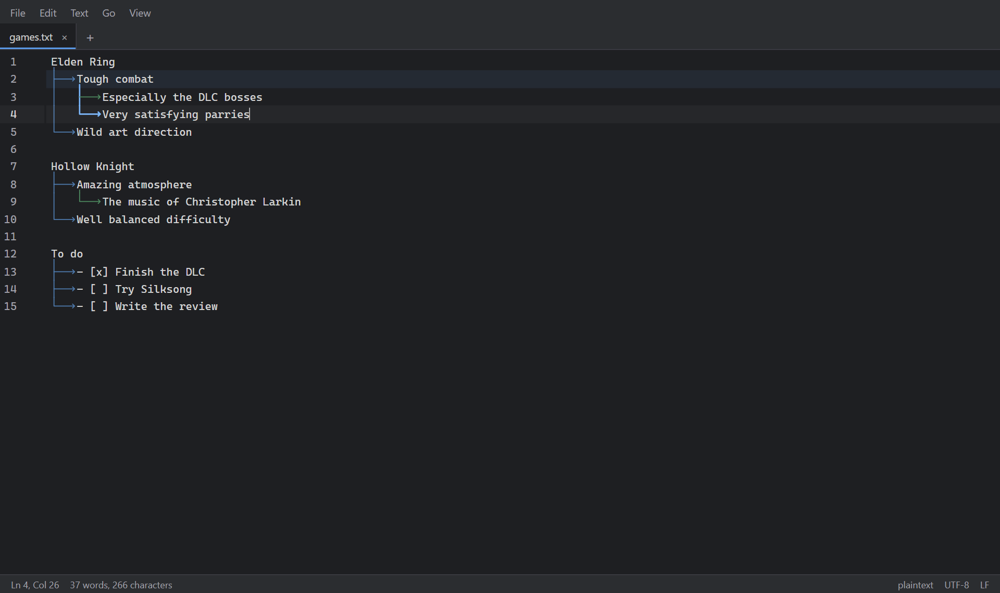
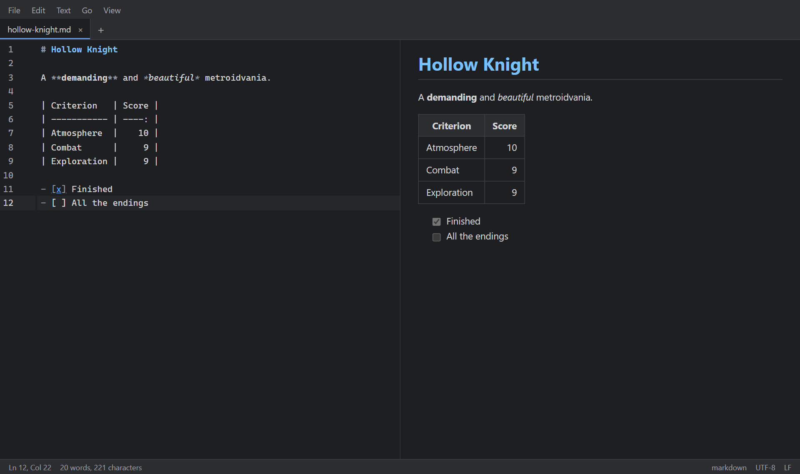
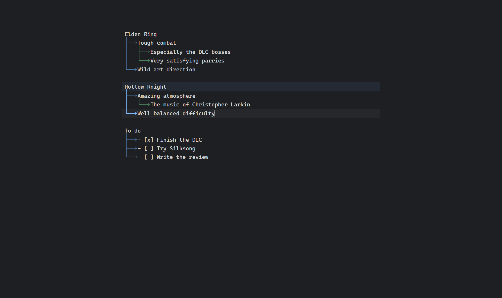
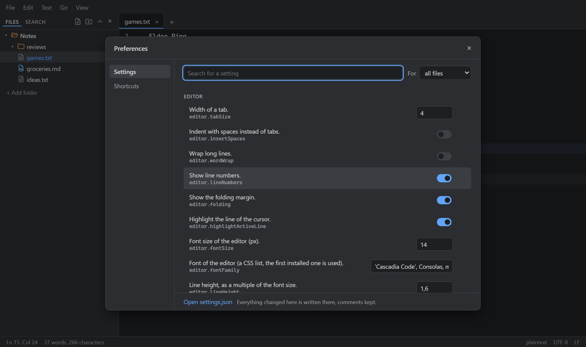

Made for writing
Smart lists, auto pairs, case and line tools, spell checking, bookmarks, and the lines changed since the last save marked in the margin.
A light text editor for taking notes, that still opens any text or code file. The simplicity of Notepad++, the customization of Vim, a modern interface.

Press Tab when a line follows from the one above: Cascades draws the link. The file only holds tabs, the lines are drawn, never written, so your notes stay plain text that opens anywhere.

Smart lists, auto pairs, case and line tools, spell checking, bookmarks, and the lines changed since the last save marked in the margin.

Folders on the left, quick open with Ctrl+P, search and replace in every file. Tabs, split views, and a session that comes back as you left it, unsaved notes included.

Markdown, HTML, CSV and JSON previews next to the text. Images and PDF files open in a tab.

Zen mode hides everything but your words. Seven themes, light and dark, and your own.

Every setting and every shortcut in one window, or in settings.json. A leader key for more shortcuts, and everything is a command.
A plugin is a folder with a manifest and a JavaScript file. It gets the same API as the features built into Cascades: commands, shortcuts, menus, panels, the editor.
export default function (ctx) {
ctx.commands.register('hello.say', () => ctx.dialogs.alert('Hello'), {
title: 'Say hello',
});
ctx.keybindings.register({ key: 'Leader H', command: 'hello.say' });
}